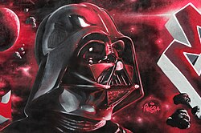

Darth Vader
Personagem de Star Wars
Informaçoes gerais
Primeira Aparição
Como Anakin: Episódio I
Como Darth Vader: IV
Interpretado por
David Prowse (corpo; Episódios IV–VI)
Bob Anderson (Episódios V–VI, dublê)
Hayden Christensen (Episódio III, série "Obi-Wan Kenobi")
Spencer Wilding / Daniel Naprous (Rogue One)
Sebastian Lewis Shaw (Episódio VI)
Jake Lloyd (Episódio I)
Hayden Christensen (Episódios II–III, VI [reedição], série "Ahsoka", IX [voz])
Voz original
James Earl Jones (Episódios III–VI, IX)
Informações pessoais
Nascimento: 41 ABY; Tatooine
Morte: 4 DBY; Segunda Estrela da Morte
Características físicas
Espécie: Humano(Ciborgue)Estatura 2.02m (Darth Vader) / 1.87m (Anakin Skywalker)
Cor do cabelo: Castanho claro (Anakin Skywalker) / Calvo (Darth Vader)
Cor dos olhos: Azuis (Anakin Skywalker) / Amarelos (Sith)
Darth Vader
Darth Vader, também conhecido como Anakin Skywalker, é um personagem fictício da franquia Star Wars. O personagem é o antagonista central da trilogia original e, como Anakin Skywalker, é o principal protagonista de toda a trilogia prequela. O criador de Star Wars,George Lucas , se referiu coletivamente aos seis primeiros filmes episódicos da franquia como "a tragédia de Anakin Skywalker". Ele se tornou um dos vilões mais icônicos da cultura popular e foi listado entre os maiores vilões e personagens fictícios de todos os tempos.
Originalmente um escravo em Tatooine, Anakin Skywalker era um Jedi profetizado para trazer equilíbrio à Força. Ele é atraído para o Lado Negro da Força pelo Chanceler Sheev Palpatine/Darth Sidious e se torna um Lorde Sith, assumindo o título de Darth Vader. Após uma batalha de sabre de luz com seu ex-mentor Obi-Wan Kenobi em Mustafar, na qual ele fica gravemente ferido, Vader é transformado em um ciborgue. Ele então serve ao Império Galáctico por mais de duas décadas como seu principal executor. Vader se redime salvando seu filho, Luke Skywalker, e matando Palpatine, sacrificando sua própria vida no processo. Ele também é o marido secreto de Padmé Amidala, o pai biológico da Princesa Leia, e o avô de Kylo Ren(Ben Solo). Na continuidade não canônica de Star Wars, ele também é avô de Ben Skywalker, seu epônimo Anakin Solo, Jaina Solo e Darth Caedus (Jacen Solo), e bisavô de Allana Solo.
Criação
De acordo com o criador de Star Wars, George Lucas, ele experimentou várias combinações de nomes para o personagem construído sobre a frase "Dark Water". Então ele "adicionou muitos sobrenomes, Vaders e Wilsons e Smiths, e... apenas surgiu a combinação de Darth e Vader". Após o lançamento de O Império Contra-Ataca (1980), Lucas afirmou que o nome Vader foi baseado na palavra alemã/holandesa Vater ou vader, que significa 'pai', tornando o nome representativo de um "Pai Sombrio". Como nenhum outro personagem com o título "Darth" foi apresentado até o lançamento de The Phantom Menace (1999), alguns espectadores interpretaram como o primeiro nome do personagem, em parte porque Obi-Wan Kenobi se dirige a ele como "Darth" no filme original. O apelido é concedido a Anakin em A Vingança dos Sith (2005) em sua mudança para o lado negro da Força.
O design original do traje de Darth Vader não incluía um capacete. A ideia de que Vader deveria usar um aparelho respiratório foi proposta pela primeira vez pelo artista conceitual Ralph McQuarrie durante as discussões de pré-produção de Star Wars com George Lucas em 1975. McQuarrie afirmou a Lucas que sua intenção era retratar uma figura malévola em uma capa com armadura de samurai. “Sobre Darth Vader, George acabou por dizer que gostaria de ter uma figura muito alta e escura e esvoaçante que passasse uma sensação assustadora como se tivesse vindo com o vento”.[44] McQuarrie observou que o roteiro indicava que Vader viajaria entre naves espaciais e precisava sobreviver no vácuo do espaço, e propôs que Vader deveria usar algum tipo de traje espacial. Lucas concordou, e McQuarrie combinou uma máscara de respiração de rosto inteiro com um capacete de samurai, criando assim um dos designs mais icônicos do cinema de fantasia espacial.[45][44] A arte promocional de 1975 de McQuarrie mostrava Darth Vader envolvido em um duelo de sabres de luz com Deak Starkiller (um protótipo de personagem para Luke Skywalker). Também retratava Vader vestindo uma armadura preta, uma capa esvoaçante e uma máscara e capacete alongados, semelhantes a uma caveira. Sua semelhança com o design final do traje de Vader demonstra que a primeira concepção do personagem feita por McQuarrie foi tão bem-sucedida que muito pouco precisou ser alterado para a produção.[46]
Apariçoes
Darth Vader aparece pela primeira vez em Star Wars como um implacável ciborgue Sith, servindo ao Império Galáctico.[90] Ele é encarregado, junto de Grand Moff Tarkin (Peter Cushing), de recuperar os planos secretos da estação de batalha Estrela da Morte, que foram roubados pela Aliança Rebelde. Vader captura e tortura a Princesa Leia (Carrie Fisher), que escondeu os planos dentro do droide R2-D2 (Kenny Baker) e o enviou para encontrar o ex-Mestre Jedi de Vader Obi-Wan Kenobi (Alec Guinness) no planeta Tatooine. Durante o resgate de Leia pelos aliados de Obi-Wan, Luke Skywalker (Mark Hamill) e Han Solo (Harrison Ford), Vader evapora Obi-Wan em um duelo de sabres. Tendo colocado um dispositivo de rastreamento a bordo de sua nave, a Millennium Falcon, Vader é capaz de rastrear a base Rebelde no planeta Yavin 4. Durante o ataque Rebelde à Estrela da Morte, Vader embarca em seu TIE fighter e derruba diversos X-wings rebeldes, mas Solo intervém e desvia a nave de Vader, permitindo que Luke destrua a Estrela da Morte. Em O Império Contra-Ataca, Vader fica obcecado em encontrar Luke após descobrir que ele era sensível à Força[93] e lidera seus stormtroopers para atacar a base rebelde em Hoth, mas os rebeldes escapam. Enquanto conversava com o Imperador (Ian McDiarmid) via holograma, Vader o convence de que Luke seria um aliado valioso se ele pudesse ser voltado para o lado negro. Vader contrata um grupo de caçadores de recompensas para seguir os amigos de Luke e negocia com o administrador do planeta minerador Bespin Lando Calrissian (Billy Dee Williams) para montar uma armadilha a fim de atrair Luke.[93] Depois que Han, Leia, Chewbacca (Peter Mayhew) e C-3PO (Anthony Daniels) chegam, Vader tortura e congela Han em carbonita e o entrega ao caçador de recompensas Boba Fett (Jeremy Bulloch). Quando Luke chega, Vader o domina em um duelo de sabres de luz, cortando sua mão. Vader diz a Luke que ele é seu pai e tenta convencê-lo a se juntar ao lado negro e ajudá-lo a derrubar o Imperador. Horrorizado, Luke escapa por um poço de ar. Vader telepaticamente diz a Luke que é seu destino se juntar ao lado negro.
Trinta anos após a Guerra Civil Galáctica, o capacete de Darth Vader aparece em O Despertar da Força (2015), no qual o neto de Vader, Kylo Ren (Adam Driver) – que seguiu os passos de seu avô ao cair para o lado negro e trair os Jedi – é visto se dirigindo a ele, embora Vader não apareça no filme. Em um ponto, seu capacete foi considerado como o MacGuffin do filme. O capacete aparece novamente em The Rise of Skywalker (2019), quando Kylo medita brevemente com ele, e durante o primeiro duelo do filme entre Kylo e Rey (Daisy Ridley). O capacete é visto pela última vez no planeta Kijimi, que mais tarde é destruído por um Destróier Estelar modificado. O filme também revela que a voz vindo do capacete de Vader em O Despertar da Força foi gerada por um Palpatine ressuscitado. Em The Rise of Skywalker, Anakin faz uma participação vocal, junto com outras "vozes de Jedi do Passado", onde ele encoraja Rey a "trazer de volta o equilíbrio... como [ele] fez" antes de enfrentar Palpatine e suas forças Sith.
Impacto Cultural
Em 2003, o American Film Institute listou Vader como o terceiro maior vilão da história do cinema em 100 Anos... 100 Heróis e Vilões da AFI, atrás de Hannibal Lecter e Norman Bates.[168] Seu papel como um herói trágico na saga também recebeu críticas positivas.[169][170] Contrariamente, em 1977, um escritor do New Journal and Guide criticou a falta de diversidade racial no filme original de Star Wars, apontando que "a força do mal ... está vestida de preto e tem a voz de um homem negro".[171] George Lucas se sentiu magoado com tais acusações.[172] Muitos filmes e séries de televisão prestaram homenagem a Darth Vader. O filme Cosmic Princess de 1982, compilado de episódios da série televisiva Space: 1999, contém várias referências de Star Wars, incluindo um personagem chamado "Vader".[173] Marty McFly em De Volta para o Futuro (1985), vestido com um traje anti-radiação, chama a si mesmo de "Darth Vader do planeta Vulcano" em uma cena. Vader é parodiado como "Dark Helmet" (Rick Moranis) na paródia de Star Wars Spaceballs (1987). Um antagonista principal em Final Fantasy IV (1991) foi declarado pelo criador do jogo Takashi Tokita como sendo baseado em Vader.[174] Em Chasing Amy (1997), Hooper X (Dwight Ewell) fala em uma convenção de quadrinhos sobre Darth Vader ser uma metáfora de quão mal o gênero de ficção científica trata os negros; ele está especialmente ofendido que Vader, o "irmão mais negro da galáxia", se revela um "velho homem branco fraco e duro" no final de O Retorno de Jedi. Vader, especialmente seu papel como pai, é parodiado como Imperador Zurg em Toy Story 2.[175]Em 2003, o American Film Institute listou Vader como o terceiro maior vilão da história do cinema em 100 Anos... 100 Heróis e Vilões da AFI, atrás de Hannibal Lecter e Norman Bates.[168] Seu papel como um herói trágico na saga também recebeu críticas positivas.[169][170] Contrariamente, em 1977, um escritor do New Journal and Guide criticou a falta de diversidade racial no filme original de Star Wars, apontando que "a força do mal ... está vestida de preto e tem a voz de um homem negro".[171] George Lucas se sentiu magoado com tais acusações.[172]
Intérpretes
Darth Vader foi interpretado pelo fisiculturista David Prowse na trilogia original do filme, com o esgrimista Bob Anderson realizando as cenas de luta com o sabre de luz do personagem.[52][53] George Lucas avaliou que Prowse, por ter 1,98 metros de altura, "trouxe uma fisicalidade para Darth Vader que era essencial para o personagem [...] com uma estatura imponente e desempenho de movimento para combinar com a intensidade e a presença de Vader"
Lucas escolheu um ator diferente para fazer a voz de Vader, já que Prowse tinha um forte sotaque inglês do West Country que levou o resto do elenco a apelidá-lo de "Darth Farmer". Lucas originalmente pretendia que Orson Welles dublasse Vader, mas depois de decidir que a voz de Welles seria muito reconhecível, ele escalou o menos conhecido James Earl Jones.[55][56] Jones inicialmente sentiu que suas contribuições para os filmes eram muito pequenas para justificar seu reconhecimento e seu papel não foi creditado, por pedido dele, até o lançamento de O Retorno de Jedi (1983).[57] Quando Jones foi perguntado especificamente se ele havia fornecido a voz de Vader para Revenge of the Sith - recentemente ou de uma gravação anterior - Jones respondeu: "Você teria que perguntar a Lucas sobre isso. Eu não sei".[58] Hayden Christensen e Gene Bryant interpretaram alternadamente Vader em A Vingança dos Sith.[59][60][61] Durante a produção deste filme, Christensen perguntou a Lucas se um traje especial de Vader poderia ser construído para caber em seu próprio corpo, em vez de ter um ator diferente vestindo um dos os conjuntos originais do traje de Vader usados por Prowse, com o pedido sendo atendido.[62] Brock Peters forneceu a voz de Darth Vader na série de rádio NPR/USC. Tanto Spencer Wilding[63] quanto Daniel Naprous interpretaram Vader em Rogue One (2016), com Jones reprisando seu papel como a voz do personagem.
Notas
- O nome "Skywalker" apareceu pela primeira vez como o sobrenome de Luke no refinamento do roteiro em 1973
- Christensen também atuou como Vader enquanto McDiarmid estava filmando o novo holograma do Imperador para O Império Contra-Ataca